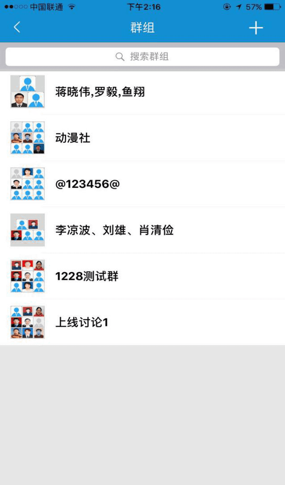

进入消息主页-点击右上方的+，展开列表：发起聊天、新建群组、已有群组、常用联系人（有过聊天记录的都会在常用联系人列表中）
点击发起聊天，通过选择地区/部门、标识进行搜索、筛选对象进行一对一聊天，电话、发信息、邮件和发起会话
群组，相当于一个聊天室，让群组成员可以随时进行无缝沟通，点击消息主页的右上角+号 — 新建群组通过搜索条件添加群组成员、或者一对一聊天时点击聊天页面右上角的头像击添加其他成员；在已有群组可直接进行聊天，群组成员都能收到消息
群组详情页面可对每个群组进行单独的设置：修改群名称，查看群成员（权限增减）、查看群组二维码、置顶聊天、消息免打扰、短信提醒、清空聊天记录和解散并退出该群组；个人详情也可进行单独的设置
查看群组二维码：电信员工可通过扫一扫该二维码、或者保存图片识别二维码加入该群组
置顶聊天：在消息列表长按聊天对象或群组，选择“置顶聊天”当其他未置顶聊天的对象或群组有新消息接入，已置顶的聊天在消息列表最上方显示；也可取消置顶
消息免打扰：已设置免打扰的对象或群组有未读新消息接入时，已设置免打扰的对象或群组显示免打扰图标
短信提醒：长时间不登录系统无法接收信息，需发手机短信提醒用户，可在个人设置和群组设置选择对象进行短信提醒。
聊天主页：聊天可看到对方的头像和名称，并且带有“地区和部门标识”；点击头像可查看聊天对象的个人信息、或者群成员的信息和相关设置；实现消息复制、删除、转发、收藏、保存、支持识别地址消息，并且可在两分钟内撤回消息
聊天辅助功能：能帮助聊天形式更全面和更有效，实现真正的无缝沟通。支持以下功能：全文搜索（联系人及群组名、聊天记录）、@成员功能（长按头像或者直接输入@，选择对象）、语音（最多60秒）、短视频和位置分享功能
消息列表：当有未读消息时，显示相应的未读数量；可设置消息为未读或已读状态；可删除聊天消息
在线客服为用户提供即时沟通：通过自助、人工（输入任何内容都可以进人工）和电话形式提供服务：